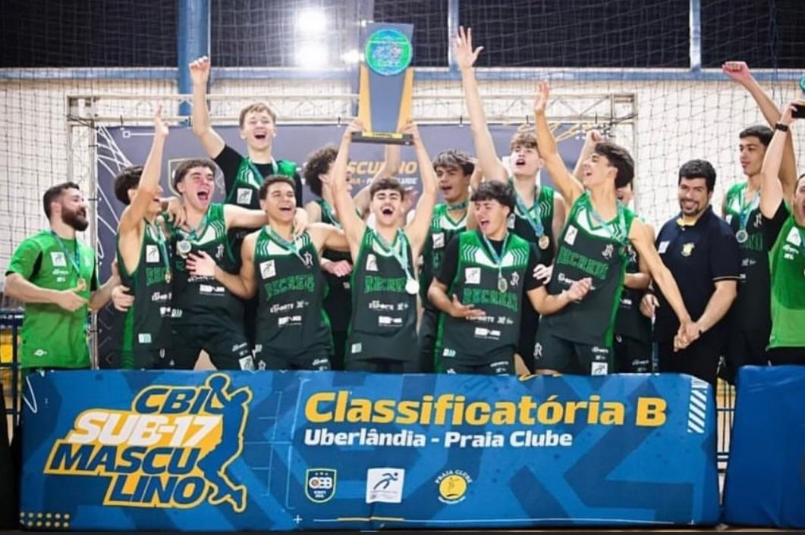

História do Time
Origem
O Recreio da Juventude é um dos clubes mais tradicionais da Serra Gaúcha, fundado em 28 de dezembro de 1912, em Caxias do Sul. Com o passar dos anos, o clube passou a investir fortemente na formação esportiva. O Departamento de Basquete do Recreio da Juventude passou a atuar desenvolvendo atletas de 6 a até 19 anos, tanto para lazer quanto para competições regionais, estaduais, nacionais e até em parceria com o Caxias do Sul Basquete. Essa cooperação com o Caxias do Sul Basquete teve início em 2018 e se revelou estratégica para o crescimento da modalidade na cidade. Desde então, o número de atletas nas escolinhas e equipes de competição saltou de 46 para 215, um aumento impressionante de 367%. Essa parceria viabilizou ainda a presença do Recreio como sede e participante de competições importantes, como a Liga de Desenvolvimento do Basquete (LDB) — campeonato brasileiro sub-22. No ano 2023, o clube sediou a primeira fase da LDB no Ginásio do Sesi em Caxias do Sul. O Caxias/Basquete–Recreio fechou essa fase com 100% de aproveitamento.

Príncipais conquistas
O Basquete Recreio coleciona conquistas importantes nos últimos anos, consolidando-se como referência na formação e no alto rendimento. Entre os destaques estão o bicampeonato gaúcho Sub-19 (2023 e 2024), a conquista invicta do Sul-Brasileiro Sub-19, além do título da Classificatória B do CBI Sub-17 em 2025. Nas categorias de base, brilhou em praticamente todas as divisões, com títulos estaduais no Sub-12 e Sub-14 e pódios no Sub-15, Sub-16 e Sub-17. Também conquistou medalha de bronze no CBI 3x3 Sub-15, participou de torneios internacionais no Chile e levantou troféus em competições adultas e master, como o Aberto de Caxias do Sul e o Encontro Master de Basquete.

Como chegar
Endereço: Av. Salgado Filho, 2084 - Salgado Filho, Caxias do Sul - RS, 95098-420